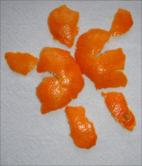

4. Checklist de décollage d'un projet 🚀
“ce qui est bien fait au départ, n’est plus à refaire”
Attention : Nommage des fichiers et dossier⚓
Comme beaucoup de logiciels QGIS supporte mal les noms de fichiers contenant :
- des espaces [ ]
- des caractères spéciaux [ ! ?/*$é #.]
- des lettres accentuées [éèàù]
Par conséquent, prenez l'habitude d'éviter cela quand vous créez des dossiers et des fichiers. Pour plus de clarté n'hésitez pas à utiliser des tirets : [- _ ]
Prenez également l'habitude de rédiger des noms de fichiers clair et explicite. Vous pouvez vous constituer des règles de nommage ou appliquer celles de votre collectif de travail.
Par exemple :
La règle de nommage suivante est utilisé par une ONG :
<code pays>_<lieux>_<theme>_<sous-thème>_<type de géométrie>_<sources des données>_<date>_<Système de coordonnées>.gpkg
Cela donne le nom suivant pour une couche de routes en France
fr_DO64_roads_line_IGN_2021_WGS84.gpkg
Procédure : Bien organiser les fichiers dans le disque dur 📂⚓
Procédure : Paramétrer le projet dans QGIS ⚓
- Paramétrer votre projet⚓
Barre de menu > Projet > Propriétés
- Onglet Général : vérifier les unité de mesure⚓
Vérifier bien que vous êtes dans une unité de mesure pertinente : mètre et mètre carré
- Onglet général : indiquer le chemin du dossier du projet et nommer le projet⚓
- Onglet SCR : sélectionner un système de coordonnées adaptés au territoire couvert par votre projet.⚓
🇫🇷 Si vous travaillez en France métropolitaine, le système de coordonnées projetées le plus adapté est :
- RGF93 v1 / Lambert-93 EPSG :2154
ou une version plus récente et plus précise :
- RGF93 v2b / Lambert-93 EPSG :9794
🌍 Si vous travaillez sur le monde entier vous privilégierez un système de coordonnées géographiques non-projetées : WGS 84 EPSG :4326
🏝️🇫🇷 Si vous intervenez dans les DROM, voici les systèmes de coordonnées projetées utilisés par l'IGN :
- Antilles (Gaudeloupe, Martinique) : RGAF09 UTM Nord Fuseau 20 IGNF :RGAF09UTM20
- Guyane RGFG95 UTM Nord f.22 IGNF :UTM22RGFG95
- La Réunion RGR92 UTM 40 Sud IGNF :RGR92UTM40S
- Mayotte RGM04 UTM Sud fuseau 38 IGNF :RGM04UTM38S
ComplémentsImaginez une orange. Sa surface arrondie représente la Terre, et chaque point sur cette surface peut être localisé en utilisant des coordonnées géographiques, comme la latitude et la longitude. Ces coordonnées fonctionnent bien pour décrire la position d’un point sur une sphère, mais elles ne sont pas directement adaptées pour des calculs précis de distances ou pour représenter cette surface sur une carte plane.
Maintenant, imaginez que vous épluchez l’orange et que vous essayez d’aplatir sa peau sur une table. Vous allez rapidement constater qu’il est impossible de le faire sans déformer la peau. Selon la manière dont vous procédez, certaines parties seront étirées, comprimées ou même déchirées. C’est exactement ce qui se passe lorsqu’on projette la surface courbe de la Terre sur une carte plate : il y a toujours une certaine distorsion, que ce soit au niveau des distances, des angles ou des surfaces.
Un système de coordonnées géographiques (SCG) correspond à l’orange intacte, avec ses points définis sur une sphère ou un ellipsoïde. Il est parfait pour représenter des positions globales, mais il n’est pas pratique pour travailler sur une carte plane.
Un système de coordonnées projetées (SCP) correspond à la peau d’orange aplatie. En utilisant différentes méthodes (appelées projections cartographiques), on choisit comment "aplatir" cette surface pour répondre à des besoins spécifiques :
- Certaines projections préservent les angles (comme Mercator), mais déforment les surfaces.
- D’autres conservent les surfaces (comme Lambert égal-area), mais altèrent les formes.
- D’autres encore cherchent un compromis entre plusieurs types de distorsions.
Le choix du système projeté dépend donc du contexte et des objectifs : voulez-vous mesurer précisément des distances ? Travailler sur une petite zone locale ? Représenter le monde entier ? Chaque méthode d’aplatissement (ou projection) a ses avantages et ses limites.
En résumé, le SCG correspond à la représentation fidèle d’une Terre ronde (comme l’orange intacte), tandis que le SCP est une version aplatie et adaptée à un usage spécifique (comme la peau d’orange étalée).
Pour la France métropolitaine, nous utilisons le Système de coordonnées projeté : EPSG 9794 ou son ancêtre un peu moins précis : EPSG 2154.
Pour approfondir ce sujet :⚓
- Ajouter d’autres informations dans l’onglet Métadonnées : Titre, auteur,date, etc.⚓
- Enregistrer votre projet pour que les paramétrages soit modifiés.⚓
💾 ou bien le raccourci
Ctrl+S
Attention : Enregistrer régulièrement votre travail : Ctrl+S⚓
QGIS a la mauvaise habitude de planter de temps en temps pour des raisons inconnus. Prenez l'habitude d'enregistrer régulièrement l'avancement de votre projet.
Votre répertoire de projet devrait ressembler à cela ▼⚓
📂 projet_SIG_<territoire><Auteur><date> [répertoire général du projet]
|__📂 Sources [archivage de toutes les couches que vous allez télécharger]
|__📂 Travail [les couches sur lesquels vous travaillerez, celle que vous modifierez]
|__📂 Styles [des fichiers définissant des styles appliqué à vos couches]
|__📂 Temporaires [les fichiers intermédiaires que vous pourrez supprimer en fin de travail]
|__📂 Rendus [les exports de vos cartes et autres représentations]
menu Projet > Nouveau projet
Votre fichier de projet sera ici▼⚓
📂 projet_SIG_<territoire><Auteur><date> [répertoire général du projet]
|_📄 SIG<territoire><Auteur><date>.qgz|__📂 Sources [archivage de toutes les couches que vous allez télécharger]
|__📂 Travail [les couches sur lesquels vous travaillerez, celle que vous modifierez]
|__📂 Styles [des fichiers définissant des styles appliqué à vos couches]
|__📂 Temporaires [les fichiers intermédiaires que vous pourrez supprimer en fin de travail]
|__📂 Rendus [les exports de vos cartes et autres représentations]